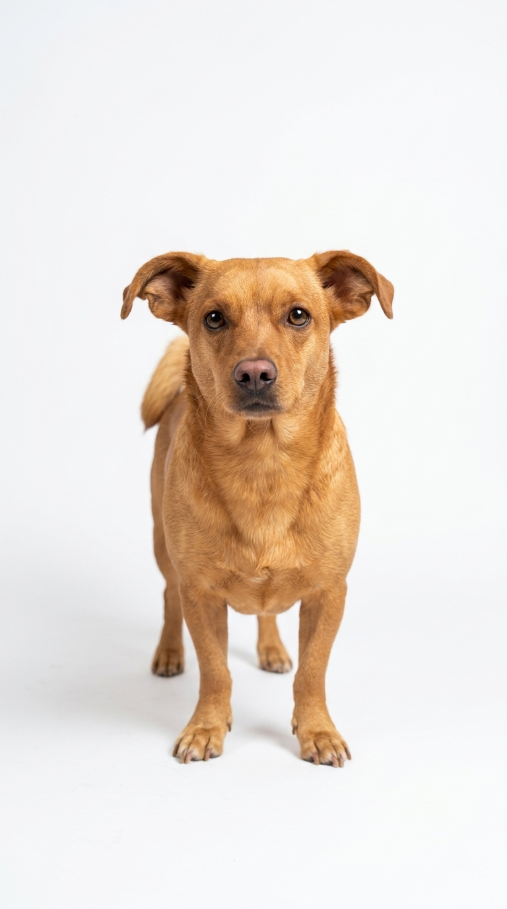

1. La ventana crítica de las 3 a las 16 semanas
Durante los primeros cuatro meses de vida, la curiosidad natural de los cachorros supera a la cautela. Después de las 16 semanas esa ventana se cierra gradualmente y empieza la etapa de precaución ante lo desconocido. Por eso la socialización temprana es la mejor "vacuna conductual" contra miedos y fobias futuras.
2. ¿Cómo socializar de forma segura si aún le faltan vacunas?
3. Socializar no es obligarlo a que todos lo toquen
Un error común es pasar al cachorro de brazo en brazo entre extraños o soltarlo con 10 perros hiperactivos. La verdadera socialización consiste en que tu cachorro aprenda a sentirse tranquilo e indiferente frente a estímulos cotidianos, sabiendo que tú nunca lo forzarás a interactuar si tiene miedo.
4. Checklist de experiencias positivas para el primer mes en casa
- Personas diversas: Personas con sombrero, casco de moto, barba, paraguas, niños tranquilos y adultos mayores.
- Superficies bajo sus patas: Césped húmedo, alfombra, piso liso, madera, arena y rejillas metálicas bajas con premios encima.
- Sonidos graduales: Licuadora, secador de pelo a volumen bajo, timbre, tráfico y grabaciones de tormentas o fuegos artificiales a volumen muy suave mientras juega.
- Perros tutores equilibrados: Encuentros uno a uno en casa con perros adultos sanos, vacunados y con excelentes habilidades sociales.
5. Acostumbrarlo al cepillo, orejas y patitas
Dedica 2 minutos diarios a tocar suavemente una patita y darle un premio, levantar una oreja y darle un premio, y mostrarle el cortaúñas o el arnés asociándolos con comida deliciosa. Su veterinario y peluquero te lo agradecerán toda la vida.
📚 Referencias Científicas y Fuentes Clínicas
- American Veterinary Society of Animal Behavior — AVSAB (2008). Position Statement on Puppy Socialization. AVSAB Clinical Statements.
- Freedman, D. G., King, J. A., & Elliot, O. (1961). Critical period in the social development of dogs. Science, 133(3457), 1016-1017. DOI: 10.1126/science.133.3457.1016.
- Dietz, L., et al. (2018). Puppy classes and beyond: Association with dog temperament and behavior as an adult. Journal of Veterinary Behavior, 24, 72-77.
¿Buscas apoyo profesional para tu perro?
Consulta educadores caninos, etólogos y guarderías sin jaulas en tu ciudad dentro de nuestro directorio.
Ver educadores y etólogos